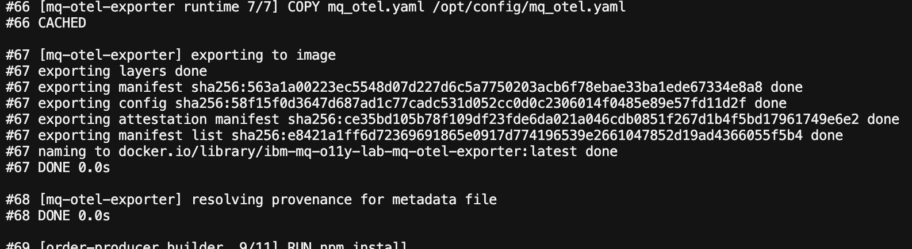
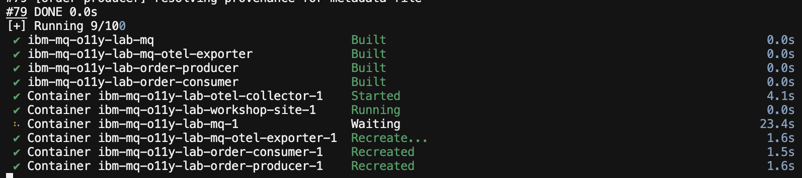
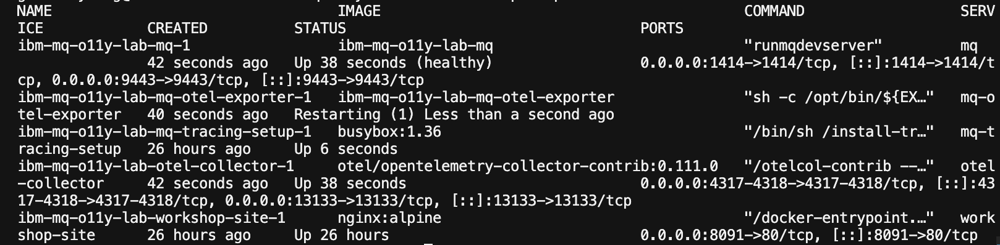
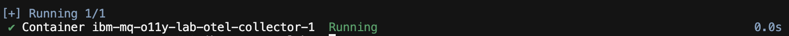
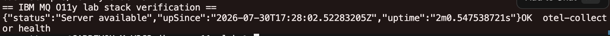
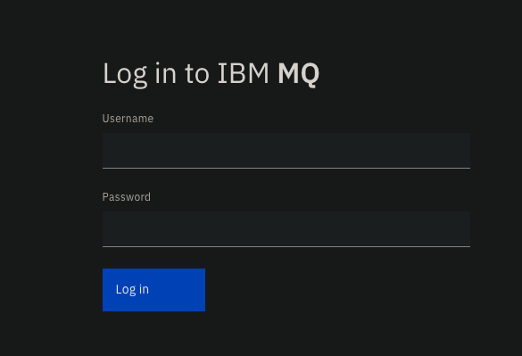
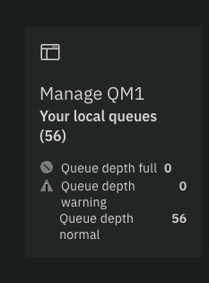
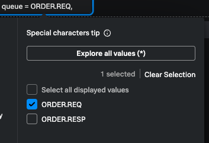
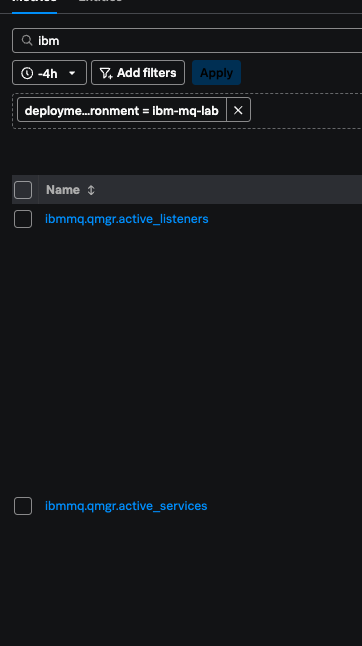
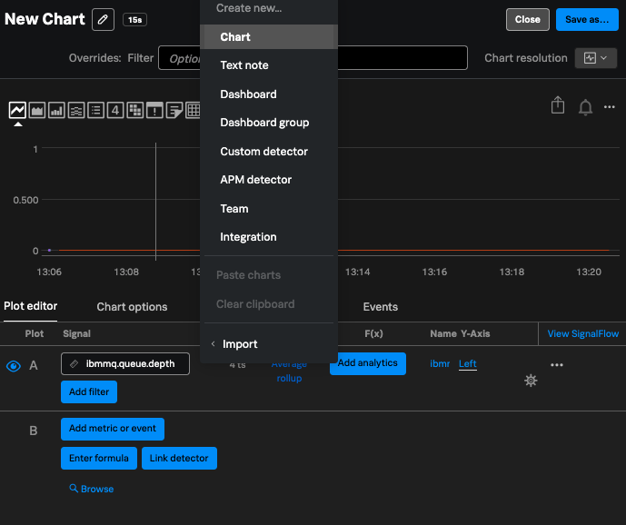

Hands-on lab · IBM MQ metrics · Splunk Observability Cloud
IBM MQ metrics in Splunk Observability Cloud
Run a local IBM MQ queue manager, export queue and queue-manager metrics with
mq_otel, and view them in Splunk Observability Cloud Metrics. Sample apps move messages so
queue depth changes; this lab does not cover APM traces or Log Observer in the exercises.
What you will do
Clone the repo, add your Splunk Observability Cloud ingest token, start Docker Compose, run the verification script step by step, generate traffic, and chart IBM MQ metrics (especially ORDER.REQ depth).
Concepts 101 — MQ metrics and Splunk Observability Cloud
| IBM MQ idea | In Splunk Observability Cloud | This lab |
|---|---|---|
| Queue depth | Metric (gauge) | Object status from mq_otel (useObjectStatus) |
| PUT / GET throughput | Metric (counter) | Requires statistics collection in MQ + useStatistics in exporter — off in this lab’s default config |
| Channel / qmgr status | Metrics | Object status; filter service.name:ibm-mq when present |
| $SYS resource metrics | Metrics | CPU, disk, log (publications) — usePublications: true in this lab |
| Environment tag | Metric dimension | deployment.environment:ibm-mq-lab |
Producer and consumer apps drive message flow so queue depth moves; metrics come from mq_otel, not from the apps directly.
| Metrics environment | ibm-mq-lab (dimension on exported series) |
|---|---|
| Producer API | http://localhost:8080 |
| Request queue | ORDER.REQ |
| Collector health | http://localhost:13133 |
All commands (cheat sheet)
cd ~/projects/ibm-mq-o11y-lab
git clone https://github.com/garrett-splunk/MQ-O11y-Workshop.git . # if empty dir; skip if already cloned
cp .env.example .env
cp .env.splunk.example .env.splunk
cp secrets/mqAppPassword.example.txt secrets/mqAppPassword.txt
# Edit .env.splunk — paste ingest token (Step 2; nano or vi)
docker compose up --build -d
bash scripts/verify-stack.sh
npm install
npm run load-traffic -- 30 400docker compose up -d otel-collectordocker compose stop order-consumer
npm run load-traffic -- 25 200
docker compose start order-consumerdocker compose down -vPrerequisites
- Docker Desktop running (8 GB+ RAM recommended; Apple Silicon uses
linux/amd64for MQ images) - Node.js 20+ and npm (for
npm run load-traffic) - Git to clone MQ-O11y-Workshop
- Splunk Observability Cloud access — or an ingest token supplied by your facilitator (see Step 2)
- Accept IBM MQ developer license (
LICENSE=acceptin Compose — education/dev only)
Clone the lab (once)
mkdir -p ~/projects/ibm-mq-o11y-lab
cd ~/projects/ibm-mq-o11y-lab
git clone https://github.com/garrett-splunk/MQ-O11y-Workshop.git .Ports: 1414 MQ, 8080 producer, 8091 local workshop, 4317 OTLP, 13133 collector health.
Splunk Observability Cloud ingest token (.env.splunk)
Only the OpenTelemetry Collector reads this file. It forwards metrics to Splunk Observability Cloud using your token and realm URLs.
Workshop token
In a live session, your facilitator may give you an ingest token and realm (for example us1) on a slide or in chat. Use that value in Step 2c — you do not need to create your own token unless you are self-paced.
2a — Create the file from the template
cd ~/projects/ibm-mq-o11y-lab
cp .env.splunk.example .env.splunk2b — Get the token value
Option A — Facilitator-led workshop: Copy the ingest token from the workshop materials. Note the realm and ingest URLs if the facilitator lists them (often US1).
Option B — Self-paced: Create your own token in Splunk Observability Cloud:
- Sign in to Splunk Observability Cloud (note your realm, e.g.
us1in the URL). - Open Organization Settings (gear) → Access Tokens.
- Choose New Token → type Ingest (not API-only).
- Copy the token value once; you will not see it again.
2c — Edit .env.splunk on the command line
From the repo root, open the file in a terminal editor. Pick nano (easiest) or vi.
Using nano (recommended for beginners)
- Run:
nano .env.splunk - Use the arrow keys to move to the line
SPLUNK_ACCESS_TOKEN=your-ingest-token-here. - Delete
your-ingest-token-hereand paste the workshop (or your own) ingest token immediately after the=with no spaces. - If the facilitator gave a realm, set
SPLUNK_REALMand the three URLs to match (see example below). For US1, the template is usually correct except for the token. - Save: press Ctrl+O, then Enter. Exit: Ctrl+X.
cd ~/projects/ibm-mq-o11y-lab
nano .env.splunkUsing vi (vim)
- Run:
vi .env.splunk - Press i to enter insert mode.
- Move to the token line and replace the placeholder with your ingest token.
- Update realm URLs if needed, then press Esc.
- Type
:wqand press Enter to save and quit. (To exit without saving: Esc then:q!)
cd ~/projects/ibm-mq-o11y-lab
vi .env.splunkWhat the file should look like (US1 example)
SPLUNK_REALM=us1
SPLUNK_ACCESS_TOKEN=paste-your-ingest-token-here
SPLUNK_INGEST_URL=https://ingest.us1.signalfx.com
SPLUNK_API_URL=https://api.us1.signalfx.com
SPLUNK_LOG_INGEST_URL=https://ingest.us1.signalfx.com/v1/logRealm must match
If your org is EU0, use ingest.eu0.signalfx.com and api.eu0.signalfx.com. Never commit .env.splunk to git. Do not share your screen while the token line is visible.
2d — Confirm the file exists (do not print the token)
test -f .env.splunk && echo "OK: .env.splunk present"
grep -q 'your-ingest-token-here' .env.splunk && echo "WARN: replace placeholder token" || echo "OK: token line edited"Lab secrets and application env
The mq_otel exporter connects to MQ as user app. Docker Compose reads the password from a secret file.
cd ~/projects/ibm-mq-o11y-lab
cp .env.example .env
cp secrets/mqAppPassword.example.txt secrets/mqAppPassword.txtDefault demo password is in .env.example (MQ_APP_PASSWORD). The file secrets/mqAppPassword.txt must match that value for mq-otel-exporter.
OpenTelemetry Collector → Splunk Observability Cloud
You do not install the collector manually in this lab — docker compose up (Step 5) starts it for you. This step shows what gets deployed and which files define the Splunk Observability Cloud export path for IBM MQ metrics.
Splunk Distribution vs this lab
For production, the Splunk Distribution of the OpenTelemetry Collector is published as quay.io/signalfx/splunk-otel-collector (see Splunk Observability Cloud collector install docs). This lab uses the upstream opentelemetry-collector-contrib image with the built-in signalfx exporter — the same ingest token and realm from .env.splunk — so learners focus on MQ metrics, not collector packaging.
4a — How Compose runs the collector
From docker-compose.yml in the repo root. The service mounts the YAML config, loads your Splunk Observability Cloud token from .env.splunk, and exposes OTLP ports for mq_otel and the sample apps.
otel-collector:
image: otel/opentelemetry-collector-contrib:0.111.0
command: ["--config=/etc/otelcol/config.yaml"]
volumes:
- ./collector/otelcol-config.yaml:/etc/otelcol/config.yaml:ro
env_file:
- path: .env.splunk
required: false
environment:
DEPLOYMENT_ENVIRONMENT: ${DEPLOYMENT_ENVIRONMENT:-ibm-mq-lab}
ports:
- "4317:4317" # OTLP gRPC — mq_otel exporter
- "4318:4318" # OTLP HTTP — order-producer / order-consumer
- "13133:13133" # collector health (verify-stack.sh)Production alternative (not used in this lab): quay.io/signalfx/splunk-otel-collector:<version> — pin a semver tag from Splunk Observability Cloud OTel Collector releases.
4b — Metrics pipeline config (Splunk Observability Cloud export)
From collector/otelcol-config.yaml. mq_otel sends OTLP metrics to port 4317; the collector adds deployment.environment:ibm-mq-lab (and deployment.environment.name) on every metric resource before export to Splunk Observability Cloud.
receivers:
otlp:
protocols:
grpc:
endpoint: 0.0.0.0:4317
http:
endpoint: 0.0.0.0:4318
processors:
batch:
timeout: 5s
resource/add_environment:
attributes:
- key: deployment.environment
value: ${DEPLOYMENT_ENVIRONMENT}
action: upsert
- key: deployment.environment.name
value: ${DEPLOYMENT_ENVIRONMENT}
action: upsert
transform/mq_metrics_environment:
metric_statements:
- context: resource
statements:
- set(attributes["deployment.environment"], "ibm-mq-lab")
- set(attributes["deployment.environment.name"], "ibm-mq-lab")
exporters:
signalfx:
access_token: ${SPLUNK_ACCESS_TOKEN}
realm: ${SPLUNK_REALM}
ingest_url: ${SPLUNK_INGEST_URL}
api_url: ${SPLUNK_API_URL}
service:
pipelines:
metrics:
receivers: [otlp]
processors: [memory_limiter, resource/add_environment, transform/mq_metrics_environment, batch]
exporters: [signalfx]The full file in the repo also defines trace and log pipelines; this metrics track uses the metrics pipeline above. Open the complete file locally if you want to see health checks and debug exporters.
4c — Data flow recap
mq-otel-exporter→ OTLP gRPC →otel-collector:4317- Collector
signalfxexporter → Splunk Observability Cloud ingest URL from.env.splunk - Chart metrics in Splunk Observability Cloud (Step 9) with filter
deployment.environment:ibm-mq-lab
Start the Docker stack
First run builds IBM MQ, Node services, and the mq_otel image. Allow several minutes.
cd ~/projects/ibm-mq-o11y-lab
docker compose up --build -d
mq-otel-exporter image and Node services — allow several minutes.
mq may show Waiting until the queue manager passes its health check (~60s on first start).Wait until MQ is healthy:
docker compose ps
mq is healthy; mq-otel-exporter, otel-collector, producer, and consumer are Up (not Restarting).Expect mq healthy, then mq-otel-exporter, otel-collector, order-producer, and order-consumer running.
If you edited .env.splunk after the stack was already up (same editors as Step 2: nano .env.splunk or vi .env.splunk), reload the collector:
docker compose up -d otel-collector
.env.splunk.Verify the lab (scripts/verify-stack.sh)
Run the script from the repo root. It performs the same checks below; use this section to understand each line.
cd ~/projects/ibm-mq-o11y-lab
bash scripts/verify-stack.sh
verify-stack.sh — collector health returns OK otel-collector health. The script continues through producer, consumer, and a sample order.What the script checks (in order)
| Check | Command (equivalent) | Success looks like |
|---|---|---|
| Producer health | curl -sf http://localhost:8080/health |
JSON with order-producer |
| Consumer health | curl -sf http://localhost:8081/health |
JSON with order-consumer |
| Collector health | curl -sf http://localhost:13133/ |
HTTP 200 health response |
| Local workshop site | curl -sf http://localhost:8091/ |
HTML containing IBM MQ |
| Sample order | POST http://localhost:8080/orders |
JSON "status":"accepted" |
Run checks yourself (optional, one at a time)
curl -sf http://localhost:8080/health
curl -sf http://localhost:8081/health
curl -sf http://localhost:13133/
curl -sf http://localhost:8091/ | head -5
curl -sf -X POST http://localhost:8080/orders \
-H "Content-Type: application/json" \
-H "X-Correlation-Id: lab-verify-1" \
-d '{"productId":"SKU-100","quantity":2}'Script ends with All checks passed. If anything fails, see Troubleshooting.
MQ topology & web console
Confirm the queues and channel that mq_otel monitors (7a). The IBM MQ web console (7b) is optional — useful for live queue depth on the broker, but not required to finish the lab.
MQ console login reminder
URL: https://localhost:9443/ibmmq/console
Username: admin
Password: value of MQ_ADMIN_PASSWORD in your .env file — default for this lab is passw0rd (unless you changed it).
7a — What this lab monitors
| Queue manager | QM1 |
|---|---|
| Client channel | DEV.APP.SVRCONN (producer, consumer, mq_otel) |
| Request queue | ORDER.REQ — primary depth demo queue |
| Response queue | ORDER.RESP |
| Console URL | https://localhost:9443/ibmmq/console |
| Console login | User admin · password MQ_ADMIN_PASSWORD in .env (default passw0rd) |
7b — Navigate the IBM MQ web console
Password reminder
When the login screen appears, use admin / passw0rd if you have not edited .env. To confirm your password without opening the file in front of others, run: grep MQ_ADMIN_PASSWORD .env
- Ensure the stack is running (
docker compose psshowsmqhealthy). - Open https://localhost:9443/ibmmq/console and accept the self-signed certificate warning.
- On the login screen, enter
adminand yourMQ_ADMIN_PASSWORD(defaultpassw0rd), then click Log in.

admin / passw0rd unless you changed MQ_ADMIN_PASSWORD in .env.- From the home page, click the Manage QM1 tile (your local queue manager).

From the QM1 dashboard you can explore Overview, Queues, and Channels on your own — that is optional and not required to complete the lab.
Console not loading?
Confirm port 9443 is mapped (docker compose ps). On first start, wait until mq is healthy, then refresh. Use https:// (not http://).
Generate traffic (so metrics move)
Queue depth and message counters change when messages flow. Use one order or sustained load.
Single order
curl -X POST http://localhost:8080/orders \
-H "Content-Type: application/json" \
-H "X-Correlation-Id: lab-order-1" \
-d '{"productId":"SKU-200","quantity":3}'Sustained load (recommended before opening Splunk Observability Cloud Metrics)
cd ~/projects/ibm-mq-o11y-lab
npm install
npm run load-traffic -- 30 400Arguments: 30 messages, 400 ms between sends. Wait 1–2 minutes for metrics to appear in Splunk Observability Cloud.
View IBM MQ metrics in Splunk Observability Cloud
After Step 8, allow 1–2 minutes for ingest. MQ metric series use the ibmmq prefix (from the exporter’s metric definitions) and are tagged with deployment.environment:ibm-mq-lab.
9a — Find metrics in the Splunk Observability Cloud UI
All IBM MQ metrics from this lab are tagged deployment.environment:ibm-mq-lab. Start with Metric Explorer and apply that filter first.
Recommended — Metrics → Metric Explorer
- Sign in to Splunk Observability Cloud.
- Open Metrics in the main navigation.
- Click Metric Explorer.
- Click Add filter (or the filter bar) and enter
deployment.environment:ibm-mq-lab. - In the metric search box, type
ibmmqand select a metric (for example queue depth). - Optional: add a queue filter for
ORDER.REQwhen thequeuedimension appears on the series. In the UI the tag looks likequeue = ORDER.REQ(pick it from the filter list or type it in the filter bar).
Optional queue filter — queue = ORDER.REQnarrows depth to the lab request queue. - Set the time range to Past 15 minutes (or Past 1 hour while debugging).

deployment.environment:ibm-mq-lab and ibmmq metrics — for example ibmmq.queue.depth on ORDER.REQ and ORDER.RESP.Lab environment filter
Always include deployment.environment:ibm-mq-lab so you only see metrics from this workshop stack, not other environments in your org.
Option 2 — Metadata Catalog
- Open the main menu → Settings → Metric Metadata (Metadata Catalog).
- Search for
deployment.environment:ibm-mq-labor a metric name containingibmmq. - Review dimensions and use View in chart to open Chart Builder.
Splunk Observability Cloud docs: Metric Finder and Metadata Catalog
Option 3 — Create a chart (Chart Builder)
- Click Create (+) in the top navigation → Chart.
- Set the time range to Past 15 minutes.
- In the plot editor Signal field, type a metric name containing
ibmmq. - Add filter
deployment.environment:ibm-mq-lab. - Add a queue filter for
ORDER.REQwhen charting depth.

ibmmq.queue.depth for ORDER.REQ with deployment.environment:ibm-mq-lab.Splunk Observability Cloud docs: Create charts · Plot metrics with Chart Builder
Metric naming in Splunk Observability Cloud
The exporter emits OpenTelemetry names such as ibmmq.queue.depth. Splunk Observability Cloud may display dots or underscores — use Metric Explorer with the ibmmq prefix and deployment.environment:ibm-mq-lab filter rather than guessing the exact string.
9b — Metrics you get out of the box in this lab
The lab’s mq_otel config enables object status and $SYS publications, and monitors these objects:
- Queues:
ORDER.*,DEV.QUEUE.*(notSYSTEM.*/AMQ.*) - Channels:
DEV.*,ORDERS.* - Poll interval: 15s
| Category | What you should see | Lab exercise tie-in |
|---|---|---|
| Queue status | Depth and related queue attributes on ORDER.REQ, ORDER.RESP, and matched DEV queues (gauges). |
Step 8 traffic and Step 10 failure demo — depth rises when the consumer is stopped. |
| Queue manager | Queue manager status, connection limits, command server / channel initiator status. | Confirms QM1 is healthy while the stack runs. |
| Channels | Status and traffic-style attributes on monitored channels (e.g. bytes/buffers sent). | Supports ops views alongside queue depth. |
| $SYS publications | Platform-style metrics (CPU, memory, disk/log summaries) published under IBM’s system topics. | Optional context for capacity; not required for the depth demo. |
| MQI statistics | Per-queue mqput / mqget counters and similar statistics events. |
Not exported in default lab config (useStatistics: false). Enable in MQ and in YAML if you extend the lab. |
Representative OpenTelemetry-style names (from IBM’s exporter; your Splunk Observability Cloud UI may vary slightly):
ibmmq.queue.depth— current depth (filter to queueORDER.REQ)ibmmq.qmgr.status— queue manager status enumibmmq.channel.status— channel status on monitored channels
9c — Official metric reference (for deeper reading)
- IBM
metrics.txt— full catalog of metric classes (queue, channel, qmgr, statistics, publications). - IBM
mq_otelREADME — OpenTelemetry naming (ibmmq.<type>.<metric>), counters vs gauges, OTLP setup. - IBM MQ docs — metrics on system topics — describes $SYS publication metrics when
usePublicationsis enabled. - ibm-messaging/mq-metric-samples — source repo for
mq_otel(same metrics as other collectors in that project).
9d — Chart queue depth for this lab
- Run sustained load (Step 8) or the Step 10 failure demo so depth moves.
- Open Metrics → Metric Explorer.
- Add filter
deployment.environment:ibm-mq-lab. - Search for an
ibmmqqueue depth metric; filter or group by queueORDER.REQ. - Plot over Past 15 minutes; re-run load if the line is flat.
Metrics to discuss
Queue depth on ORDER.REQ as a backlog signal; queue manager and channel status for availability; optional $SYS CPU/disk for capacity.
Detector idea
Create a detector when ORDER.REQ depth stays above a threshold for several minutes.
No metrics? Confirm .env.splunk, restart collector, check docker compose logs mq-otel-exporter and otel-collector.
Failure demo — queue depth (metrics only)
Stop the consumer so messages accumulate on ORDER.REQ; watch depth rise in Splunk Observability Cloud Metrics.
-
Stop the consumer
docker compose stop order-consumer -
Send load
npm run load-traffic -- 25 200 - In Splunk Observability Cloud — Metrics → Metric Explorer, filter
deployment.environment:ibm-mq-lab, chartORDER.REQdepth (Step 9). - Optional — MQ console — refresh
ORDER.REQin the web console (Step 7; loginadmin/passw0rd) to see depth climb live on the broker. -
Restore processing
docker compose start order-consumer - Confirm depth trends down as the consumer drains the queue.
Troubleshooting
I see http.client.duration (or “client duration”) but no ibmmq metrics
That usually means Splunk Observability Cloud is receiving app OTLP metrics (order-producer / order-consumer) but IBM MQ metrics are not arriving. The collector tags all incoming OTLP metrics with deployment.environment:ibm-mq-lab, so the environment filter still matches — it does not mean MQ metrics are present.
In Metric Explorer use a colon, not =: deployment.environment:ibm-mq-lab (not deployment.environemtn=...).
Then search metric names for the prefix ibmmq (for example ibmmq.queue.depth).
Check the MQ metrics exporter: it runs inside the MQ container (bindings mode). Look for a stable “Connected to queue manager” line — not a crash loop:
docker compose logs mq 2>&1 | grep -i mq_otel
docker compose logs mq --tail 30If you see MQRC_NO_MSG_AVAILABLE [2033] about 30 seconds after Connected to queue manager, the exporter is usually trying publication metadata discovery while usePublications: false. Ensure metaprefix is empty in mq-otel-exporter/mq_otel.yaml (a non-empty prefix still triggers that path and fatals after the 30s wait).
Rebuild on Apple Silicon with explicit amd64:
docker buildx build --platform linux/amd64 -f mq-otel-exporter/Dockerfile \
-t ibm-mq-o11y-lab-mq-otel-exporter:latest mq-otel-exporter
docker compose build --no-cache mq
docker compose up -d --force-recreate mq otel-collectorWait 1–2 minutes, then confirm the collector is receiving more than a handful of metric data points: docker compose logs otel-collector 2>&1 | grep MetricsExporter | tail -5 (IBM MQ metrics push many series per scrape, not just 3).
Cannot connect / MQRC_UNKNOWN_CHANNEL_NAME / MQ metrics exporter restarting
Apps connect on channel DEV.APP.SVRCONN. The metrics exporter uses bindings inside the mq service and dedicated reply queues MQOTEL.REPLY / MQOTEL.REPLY2 (see mq/20-lab-connect.mqsc).
Fix: rebuild and recreate the stack so lab MQSC runs on startup:
cd ~/projects/ibm-mq-o11y-lab
git pull
docker buildx build --platform linux/amd64 -f mq-otel-exporter/Dockerfile \
-t ibm-mq-o11y-lab-mq-otel-exporter:latest mq-otel-exporter
docker compose up --build -d
docker compose logs mq --tail 30If it still fails, reset the queue manager volume (destroys local MQ data):
docker compose down -v
docker compose up --build -dConfirm secrets/mqAppPassword.txt matches MQ_APP_PASSWORD in .env (default passw0rd).
Cannot find MQ C library on order-producer / order-consumer
On Apple Silicon, services run as linux/amd64 images with the MQ client installed. Rebuild after pulling latest:
docker compose build --no-cache order-producer order-consumer
docker compose up -d order-producer order-consumerNo IBM MQ metrics in Splunk Observability Cloud
Verify .env.splunk token and realm URLs. Run docker compose up -d otel-collector mq. Check docker compose logs mq for mq_otel and docker compose logs otel-collector for ingest errors.
verify-stack.sh fails on health checks
Run docker compose ps and docker compose logs mq. MQ can take ~60s on first start. Re-run the script after MQ is healthy.
Flat queue depth chart
Run npm run load-traffic with consumer stopped (Step 10), or confirm producer returns 202 accepted.
Wrong Splunk Observability Cloud org / realm
Match SPLUNK_INGEST_URL to the realm you use to sign in (us0, us1, eu0, etc.).
Phase 2 — What could come next
This workshop (Phase 1) focuses on IBM MQ infrastructure metrics in Splunk Observability Cloud Metrics. The repo already contains pieces for a fuller observability story — Phase 2 would turn those on and add guided exercises.
Phase 1 recap
mq_otel → OpenTelemetry Collector → Splunk Observability Cloud Metrics · queue depth on ORDER.REQ · environment ibm-mq-lab
Potential Phase 2 modules
| Module | What learners would do | Already in this repo |
|---|---|---|
| APM & end-to-end traces | Place an order via POST /orders and follow one request from order-producer → IBM MQ → order-consumer in Splunk Observability Cloud APM. Tie spans together with correlation IDs. |
Node services export OTLP traces; collector traces pipeline → Splunk Observability Cloud ingest |
| IBM MQ native tracing | Enable the MQ OpenTelemetry tracing exit and inspect MQ-internal spans alongside application traces. | mq/mqtracingexit.conf, mq-tracing-setup service, scripts/mq-tracing-enable.sh |
| Logs in Splunk Observability Cloud | Search structured JSON logs from producer/consumer in Log Observer; filter by service.name and correlation ID. |
Shared logger + collector logs pipeline (splunk_hec/o11y exporter) |
| MQI statistics metrics | Chart mqput / mqget counters and queue timing metrics (not just object status depth). |
Enable STATMQI on QM1 + useStatistics: true in mq_otel.yaml |
| Detectors & dashboards | Build a detector when ORDER.REQ depth exceeds a threshold; assemble an MQ ops dashboard (depth, channel status, qmgr health). |
Metrics from Phase 1; Splunk Observability Cloud Chart Builder / detectors (Step 9) |
| Production collector path | Compare lab opentelemetry-collector-contrib with the Splunk Distribution collector image and a hardened deploy pattern. |
Step 4 reference; swap to quay.io/signalfx/splunk-otel-collector in Compose |
Phase 2 data flow (conceptual)
Suggested Phase 2 workshop shape (~60–90 min)
- Quick Phase 1 refresh — confirm metrics and queue depth still flowing.
- APM lab — trace a single order; locate MQ-related spans and service map edges.
- Enable MQ tracing exit (facilitator-led); compare native MQ spans vs app spans.
- Log search — find producer/consumer JSON logs for the same correlation ID.
- Optional — enable MQI statistics and add throughput charts next to depth.
- Capstone — create a depth detector and walk an intentional backlog (Step 10 replay) with metrics + traces + logs.
Phase 2 is not required to get value from Phase 1. Treat it as a roadmap for teams moving from “can we see MQ?” to “can we debug a message path under load?”
Other message brokers — is this setup similar?
The observability pattern in this lab transfers well to other brokers. The broker-specific pieces (exporter, metric names, and topology) do not — you swap those, keep the collector → Splunk Observability Cloud path.
What stays the same (any broker)
- Apps export OTLP traces/logs (and sometimes metrics) from producer and consumer services.
- An OpenTelemetry Collector receives telemetry, adds resource tags such as
deployment.environment, and forwards to Splunk Observability Cloud (SignalFx metrics, OTLP traces, HEC logs). - Ops metrics (queue depth, backlog, connection/channel health) come from a broker-side exporter or scrape target — not from app code alone.
- In Splunk Observability Cloud you still filter by environment, then search by a metric prefix or naming convention (
ibmmq.*here;rabbitmq.*or Prometheus names for RabbitMQ, etc.).
RabbitMQ — closest cousin, different wiring
RabbitMQ is the broker most often compared to IBM MQ: both are traditional message queues with publish/consume semantics. The Splunk Observability Cloud journey is similar; the integration points differ.
| Aspect | This lab (IBM MQ) | Typical RabbitMQ + Splunk Observability Cloud |
|---|---|---|
| Broker metrics source | IBM mq_otel (from mq-metric-samples) → OTLP/gRPC |
rabbitmq_prometheus plugin (scrape :15692/metrics) or community OTel receivers → often Prometheus pull into the collector |
| Metric naming | ibmmq.queue.depth, ibmmq.channel.*, … |
rabbitmq_queue_messages, rabbitmq_connections, … (Prometheus-style names) |
| Topology language | Queue manager, queues, channels, SVRCONN | Virtual host, exchange, queue, binding, connection |
| Backlog signal | Queue depth on named queues (e.g. ORDER.REQ) |
Messages ready / unacked on queues (same idea, different metric names) |
| Collector config | OTLP receiver ← mq_otel |
Often prometheus receiver ← RabbitMQ scrape endpoint, then same signalfx exporter to Splunk Observability Cloud |
| Native tracing | MQ OpenTelemetry tracing exit (Phase 2 in this repo) | Usually app-level tracing only (AMQP client libraries); no direct IBM-style “tracing exit” |
Bottom line for RabbitMQ: reuse this lab’s collector + Splunk Observability Cloud + app OTLP layout; replace mq_otel with a Prometheus scrape of RabbitMQ (or a RabbitMQ-aware OTel receiver) and learn Rabbit’s metric names instead of ibmmq.*.
Other brokers you may encounter
| System | Category | Metrics pattern vs this lab |
|---|---|---|
| Apache Kafka | Distributed log / streaming | Similar pipeline, different semantics: topics & partitions, consumer lag (not queue depth). Common: JMX exporter, kafka_exporter, Burrow, or managed-cloud metrics → Prometheus/OTel → Splunk Observability Cloud. |
| Apache ActiveMQ / Artemis | JMS-style queues & topics | Quite similar to RabbitMQ: JMX or Prometheus plugin → scrape → collector. JMS apps + broker metrics, like MQ + MQI. |
| Apache Pulsar | Streaming (Kafka-like) | Prometheus metrics on brokers; lag and backlog per subscription. Same collector → Splunk Observability Cloud hop. |
| NATS / JetStream | Lightweight messaging | Built-in HTTP monitoring / Prometheus endpoint on servers. Smaller metric surface; same scrape → collector idea. |
| Redis Streams | In-memory streams | Redis exporter (Prometheus) for memory, connections, stream length — similar scrape path, not a full enterprise MQ. |
| Amazon SQS / SNS | Cloud-managed queues | Different source: CloudWatch metrics (ApproximateNumberOfMessagesVisible, age of oldest message) → often CloudWatch receiver or Splunk Observability Cloud AWS integration — not a containerized mq_otel. |
| Azure Service Bus | Cloud-managed | Azure Monitor metrics (active messages, dead-letter counts) — platform metrics, same Splunk Observability Cloud destination, different ingest path. |
| Google Cloud Pub/Sub | Cloud-managed | Stackdriver/Cloud Monitoring (backlog, oldest unacked age) — again cloud-provider metrics, not an in-lab sidecar exporter. |
| Amazon MQ (managed) | Managed IBM MQ or RabbitMQ | Same as above depending on engine: IBM MQ → CloudWatch + possibly still mq_otel against the broker; Rabbit engine → Rabbit Prometheus pattern. |
Facilitator shorthand
Same for almost any broker: broker metrics exporter or scrape target → OpenTelemetry Collector (normalize & tag) → Splunk Observability Cloud; apps send OTLP for traces/logs.
Not the same: which exporter you run, metric names, topology (queue vs topic vs subscription), and whether metrics are OTLP push (IBM mq_otel) vs Prometheus pull (RabbitMQ, Kafka, many others) vs cloud API (SQS, Service Bus, Pub/Sub).
If your team standardizes on Splunk Observability Cloud + OTel, swapping IBM MQ for RabbitMQ or Kafka is mostly a collector receiver/exporter change and a dashboard/detector retune — not a redesign of the whole observability stack.
Teardown
cd ~/projects/ibm-mq-o11y-lab
docker compose down -vRecap: mq_otel exposes IBM MQ metrics; Splunk Observability Cloud Metrics shows queue depth and related signals for operations and alerting.